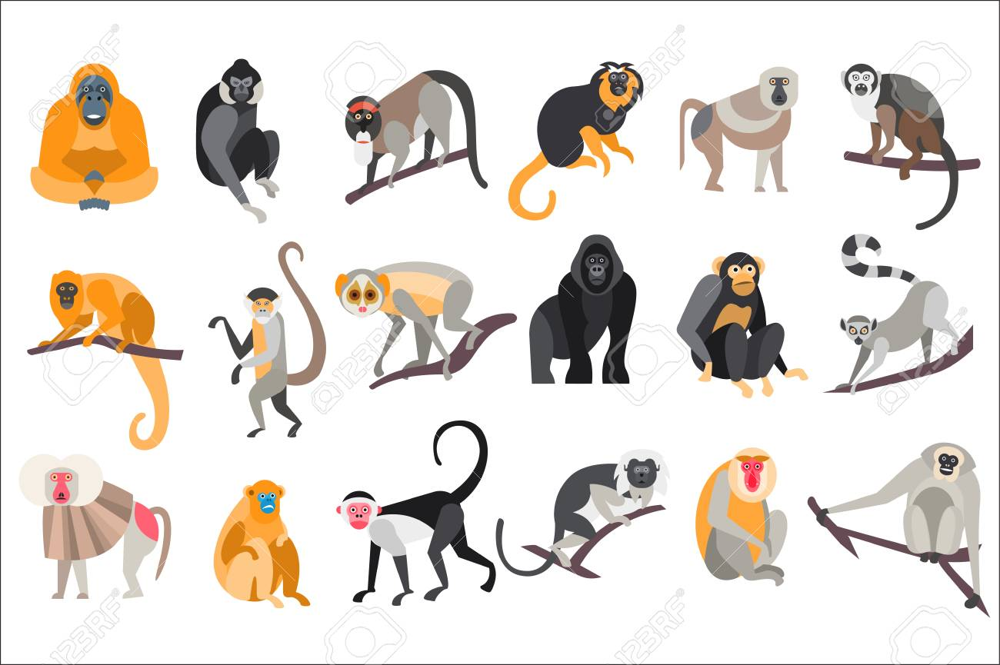

Les différentes espèces de singes
Les singes sont des primates qui se trouvent dans différentes régions du monde. Ils sont diversifiés en termes d'espèces et de caractéristiques. Voici quelques-unes des espèces de singes les plus remarquables :
- Chimpanzé
- Gorille
- Orang-outan
- Singe capucin
- Bonobo
Chaque espèce de singe a ses propres comportements, habitats et caractéristiques uniques. Les singes sont connus pour leur intelligence et leur capacité à utiliser des outils, en particulier les chimpanzés.
